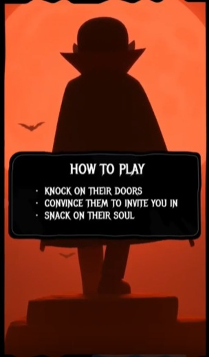

Back to Work
Snackula
AI-Driven Vampire Social Deduction Game

About the Game
You're a vampire looking for a midnight snack in a friendly neighborhood. The catch? You need to convince strangers to let you inside their homes. Each knock on a door reveals a unique AI-driven character with their own personality, fears, and reasoning.
Key Features
- AI-Native Gameplay: Every neighbor is powered by AI, making each interaction unique and unpredictable
- Dynamic Dialogue: Conversations adapt based on your approach and the neighbor's personality
- Social Reasoning: NPCs evaluate your credibility, detect inconsistencies, and make decisions based on context
- Multiple Strategies: Charm, deceive, or intimidate your way inside
The Challenge
Can you convince enough neighbors to let you in before sunrise? Each character remembers your previous interactions, and word spreads through the neighborhood. The more houses you visit, the harder it becomes to maintain your cover.
Status: Live on Terra
Platform: Mobile (iOS & Android)